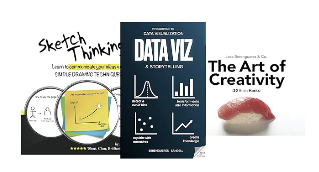
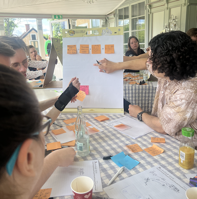

üí° About
I hold a PhD in bio-inspired robotics from the Tokyo Institute of Technology. After a stint at C.E.R.N, I joined the Computer Science Department at UAE University, where as an associate professor I teach courses in Visualization, Design Thinking, and Leadership in IT. In addition to my academic role, I am involved in executive education. I also collaborate with companies such as Apple (AI), Lulu Group (e-commerce), Etihad Airways (ML), the Spanish Ministry of Education (Design Thinking), FatShark AB (leanUX x game dev), and Porsche Middle East (PowerBI).
In 2008, I developed two startups: a visual Twitter and a photo-sharing site. Now I also enjoy coaching entrepreneurs and angel investing. I have authored several books, including "Introduction to Data Visualization & Storytelling" (2019) and "Sketch Thinking" (2016). Additionally, I serve as an associate editor for IEEE Transactions on Technology and Society, and editor of the special issue of MDPI's: AI and the Evolution of Work. You are welcome to email me your paper proposals before submitting. To book a corporate workshop, keynote contact me on LinkedIn.
üåê Talks

- Panel on AI and creativity at the Dubai Future Forum (2023 Nov).
- Interview by Chris Richardson for the Pragmatic Institute (2022 March) .
- #EUDataViz 2021 conference by the EU publications Office. Watch the conference on YouTube.
- Design thinking, how to teach it online (2020 Oct 26-28). Ministry of education and Bankia. Trained 60+ high school teachers on how to teach design thinking online.
- PyData Global 2020 short talk (2020). Watch the short talk on YouTube.
- Interview in the Colombian podcast UX Cool cast (2020 May). Listen to the interview on Spotify.
- Interview for the Spanish podcast Presentastico (2020 April). Listen to the interview on Presentastico.
üåç Publications
- J. Berengueres, "How to Regulate Large Language Models for Responsible AI," in IEEE Transactions on Technology and Society, doi: 10.1109/TTS.2024.3403681. ,
- M. A. Kuhail, S. S. Mathew, et al., "‘Will I Be Replaced?’ Assessing ChatGPT's Effect on Software Development Jobs," in Science of Computer Programming, p. 103111, 2024.
- D. Drozdzewski, J. O. Berengueres, "Developing QualNotes: A collaborative and cross-disciplinary platform," in Digital Geography and Society, vol. 6, p. 100086, 2024.
- M. A. Kuhail, J. Berengueres, and T. Kuhail, "Haptic systems: Trends and lessons learned for future HCI," in Electronics, vol. 12, no. 8, p. 1888, 2023.
- J. Berengueres, M. AlKuwaiti, and M. Abduljabbar, "Adding Sound Transparency to a Spacesuit..." in IEEE Open Journal of Engineering in Medicine and Biology, 2023.
More in Google Scholar.
Books

A series of books to think better. I wrote these to solve my own problems.
Berengueres, J. (2007). The Toyota production system re-contextualized. Lulu. com.
I wrote this book while I was finsihing my PhD in Tokyo.

A free textbook (ibook) to teach design thinking.
More in Books.
üíπ Projects
- Qualnotes is an opensource digital notetaking app that runs on flutter under 50k SLOCS. Developed togehter with github guru Marc Magrans and human geographer Danielle Drozdzewski
- Datasets on Kaggle
- Lean UX workshop
✈️ Workshops
Depending on your org problem you may consider a specific workshop:
- Dysfunction in teams? to improve team aligmnet use workshop #2 and #8.
- To improve product? Use #3
- To improve the bottom line? Use #10, #9
- To reinvent a declining product, use #4 and #6
- To improve morale and productivity, use #7 and #10
- To improve analytics, use #1 and #5
-
Title: Visualization & Storytelling: The six rules
Desc: based on the eponymous book, this is a workshop to help how to make better charts, create more value visually
Time: 20 minutes
Req: talk, requires projector
preview slides
preview video -
Title: SKETCH THINKING: Learn to communicate your ideas visually
Desc: based on the eponymous book, this is a workshop to help CS/Engineer graduates to sketch with more fluency, develop a graphic vocabulary
Time: 45 minutes
Req: very interactive, requires projector, post-it notes, round tables for 4 people each, drawing pens
preview slides
preview video -
Title: Lean UX, learn to prototype Apps (Games?) faster

Desc: based on Eric Ries' LEAN UX, this is a hands-on workshop to practice LEAN UX (aka Design thinking for App making)
Time: 40-60 minutes
Req: very interactive, requires projector, post-it notes, round tables for 4 people each, drawing pens
preview slides
preview video -
Title: Foresight: Thinking about the Future of the Game Industry ✈️
Desc: Foresight is about thinking/imaging the direction of how the game industry could change
Time: 30-45 minutes
Req: interactive, requires projector and brainstorming materials
-
Title: Data-Driven Decision Making / Decision Intelligence ✈️
Desc: Based on principles from various sources, this workshop focuses on making decisions using data-driven approaches
Time: 40 minutes
Req: interactive, requires projector and data analysis tools
-
Title: Wardley Strategy Mapping ✈️
Desc: Learn how to create and use Wardley maps for strategic planning and decision making
Time: 50 minutes
Req: interactive, requires projector, whiteboard, and markers
-
Title: Design Thinking x Life üå±
Desc: This workshop explores the intersection of design principles and their application in everyday life inspired by the book and workshop by Bill Burnett, Dave Evans, et al.
Time: 60 minutes
Req: interactive, requires projector and discussion materials
preview video -
Title: How to Teach Design Thinking Online üåê
Desc: This workshop provides strategies and tools for effectively teaching design thinking in an online environment (Miro, Trello, Skills Matrix, Personal Maps, ice-breakers; Bankia, Little Place Labs)
Time: 45 minutes
Req: interactive, requires stable internet connection, video conferencing software, and collaborative online tools
-
Title: Building Business Models üè¢üìê
Desc: This workshop focuses on creating and understanding effective business models based on proven methodologies
Time: 2 days
Req: interactive, requires projector and discussion materials
preview book -
Title: How to Use GPT for Research
Desc: This workshop explores the applications of GPT technology in academic and professional research
Time: 45 minutes
üì£ Featured in the Press
-

Our paper was featured by TheNewScientist J. Berengueres, M. AlKuwaiti, and M. Abduljabbar, "Adding Sound Transparency to a Spacesuit..." in IEEE Open Journal of Engineering in Medicine and Biology, 2023. 
Our Interactive Recycle bin deployment in a local school was featured in the Khaleej times. Berengueres, J., Alsuwairi, F., Zaki, N., & Ng, T. (2013, March). Gamification of a recycle bin with emoticons. In 2013 8th ACM/IEEE International Conference on Human-Robot Interaction (HRI) (pp. 83-84). IEEE.
Short bio
Jose Berengueres, CS Associate Professor | MBA lecturer | keynote speaker. Researches AI's impact on engineering and architecture. Authored several books on creativity and data storytelling.
IEEE Access bio
JOSE BERENGUERES (Member, IEEE) received the Ph.D. degree in bio-inspired robotics from Tokyo Institute of Technology, Japan. He is currently with X where he works on data science, human-computer interaction and the impact of artificial intelligence (AI) on engineering and architecture practice. He has authored several textbooks such as Introduction to Data Visualziation and Storytelling (2019) and The Brown Book of Design Thinking (2016). He also serves as an MBA lecturer and an associate editor for the IEEE Transactions on Technology and Society.
{kind=link}
Long bio
Jose Berengueres is an Associate Professor in Computer Science with extensive experience in design thinking, data visualization, human-computer interaction (HCI), and the impact of artificial intelligence (AI) on engineering and architecture. He also serves as an MBA lecturer, imparting knowledge on big data and its applications in various industries. A recognized keynote speaker, Jose has delivered numerous talks and workshops globally, sharing his insights on creativity, innovation, and technology's evolving role in business and design.
Early Education
He received a PhD in bio-inspired robotics from Tokyo Institute of Technology. Worked at CERN in the CMS experiment.
Entrepreneurship
In 2008, he developed two startups (a visual Twitter and a photo-sharing site). Jose actively coaches entrepreneurs from (MBUZAI, UAEU,...) based on LeanUX philosophy.
Outreach
Jose has authored several influential books on creativity, blending theoretical concepts with practical applications to provide readers (from STEM ) with a comprehensive understanding of fields such as visualization, design thinking and foresight. He is also an associate editor of the IEEE Transactions on Technology and Society.
üå∏ Volunteering and probono activites
- Mentoring at Startup Clinic - Provides guidance and support to budding entrepreneurs.
- Dubai Design Thinking Meetup - Founded this meetup group to discuss current trends in design thinking and innovation.
- Porsche MiddleEast - PowerBI consulting
- Lulu Finacial Holdings - ecomerce strategy workshops
- Judge at the Entrepreneurship World Cup UAE